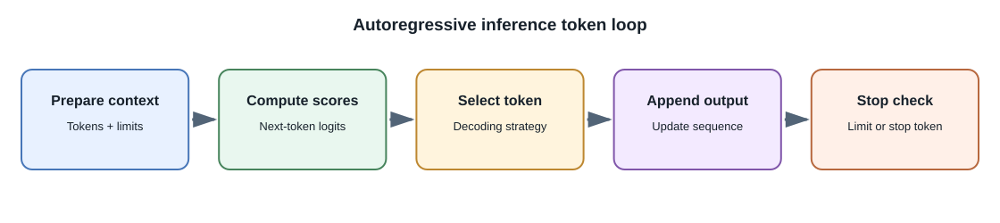
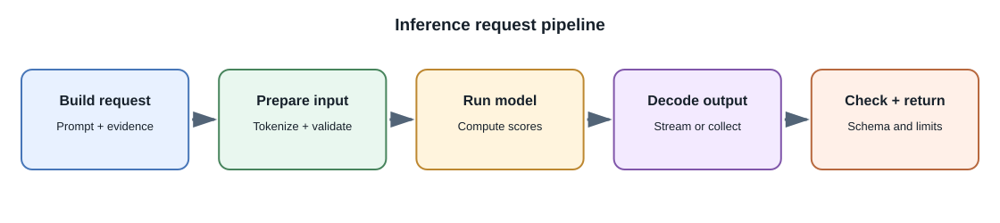

Inference and Decoding¶
Introduction¶
Inference is the process of using a trained model to produce a prediction or generated result. For a generative language model, inference usually means repeatedly predicting and selecting the next token until a stop condition is reached. The model weights are normally fixed during an ordinary request; fine-tuning or training is a separate process.

From input to output¶
- The application assembles instructions, user input, conversation context, and any retrieved evidence.
- A tokenizer converts supported input into model tokens. The service checks the model's context limit and request constraints.
- The model computes scores, often called logits, for possible next tokens.
- A decoding strategy selects a token. The system appends it to the sequence and repeats the computation.
- Generation ends at a stop token, requested stop sequence, output limit, cancellation, or provider-specific condition.
- The application validates the final output before displaying it or using it in a workflow.

Reasoning models and thinking tokens¶
Reasoning models are trained, largely with reinforcement learning, to generate intermediate reasoning before the final answer (DeepSeek-R1 describes one such training recipe). The reasoning tokens go through the same token loop as the visible answer, with practical consequences:
- They cost and take time like output. OpenAI's reasoning guide says reasoning tokens are "not visible via the API" but still occupy the context window and "are billed as output tokens" (OpenAI reasoning guide).
- They share the output limit. In OpenAI's Responses API,
max_output_tokenscovers reasoning and visible output together; when it runs out, the response ends with statusincomplete, possibly before any visible text. In Anthropic's API, thinking tokens count towardmax_tokens(Anthropic extended thinking). - Depth is a request setting. As of November 2026, OpenAI uses
reasoning.effort(model-dependent values fromnonetomax); Anthropic's current models usethinking: { type: "adaptive" }withoutput_config.effort; fixedbudget_tokensbudgets are deprecated on Claude 4.6 models and rejected by newer ones; Gemini usesthinkingConfigwiththinkingBudgetorthinkingLevel(Gemini thinking).
Reasoning models and thinking covers prompting these models and choosing a depth. To see what a request actually used, log its usage breakdown:
// src/ai/reasoning-usage.ts: call a reasoning model and log how many output tokens were thinking
import OpenAI from "openai";
const client = new OpenAI(); // reads OPENAI_API_KEY from the environment
const model = process.env.REASONING_MODEL; // a reasoning model ID from the provider's model list
if (!model) throw new Error("REASONING_MODEL is not set");
const response = await client.responses.create({
model,
reasoning: { effort: "low" }, // less thinking: faster and cheaper, weaker on hard problems
max_output_tokens: 4000, // covers the hidden reasoning and the visible answer
input: "Split 'prepare the Q3 budget review' into 3 TaskFlow subtasks with due dates.",
});
console.log(response.output_text);
console.log({
status: response.status, // "incomplete" if the limit was hit, possibly before any visible text
outputTokens: response.usage?.output_tokens,
reasoningTokens: response.usage?.output_tokens_details.reasoning_tokens,
});
Anthropic reports the same figure as
usage.output_tokens_details.thinking_tokens, and Gemini as
usageMetadata.thoughtsTokenCount. A request that "only" returns a short
answer can still bill thousands of reasoning tokens, so track this number
per feature.
Decoding choices¶
| Setting or method | Purpose | Important caveat |
|---|---|---|
| Greedy selection | Choose the highest-scoring next token | Can be repetitive or overly predictable |
| Temperature | Adjust the sharpness of the score distribution before sampling | Higher temperature increases variation; it does not add knowledge |
| Top-k sampling | Sample from a limited number of high-scoring candidates | A fixed candidate count may behave differently across contexts |
| Top-p sampling | Sample from a probability-ranked set whose cumulative mass reaches a threshold | It changes diversity, not factual grounding |
| Output-token limit | Bound generated length and cost | A short limit can truncate a valid answer |
| Stop sequence | End when a configured sequence is generated | Must be chosen to avoid accidental early termination |
| Constrained decoding | Restrict output to a grammar, schema, or token set | Provider support and schema coverage vary; validate regardless |
These settings are not interchangeable. Use deterministic or constrained generation for formats that need repeatability, and evaluate quality before changing sampling for a user-facing task.
The sampling step itself is short. This sketch applies temperature and top-p to four candidate tokens and samples 1,000 times with a fixed seed:
// src/ai/sample.ts: what a model server does for each token with temperature and top-p
type Candidate = { token: string; logit: number };
export function sample(cands: Candidate[], temperature: number, topP: number, rand: () => number): string {
if (temperature === 0) {
return cands.reduce((best, c) => (c.logit > best.logit ? c : best)).token; // greedy
}
const scaled = cands.map((c) => c.logit / temperature);
const peak = Math.max(...scaled);
const weights = scaled.map((z) => Math.exp(z - peak));
const total = weights.reduce((a, b) => a + b, 0);
const ranked = cands
.map((c, i) => ({ token: c.token, p: weights[i] / total }))
.sort((a, b) => b.p - a.p);
// Top-p: keep the smallest set of top tokens whose probabilities add up to topP
const kept: typeof ranked = [];
let mass = 0;
for (const r of ranked) {
kept.push(r);
mass += r.p;
if (mass >= topP) break;
}
let x = rand() * mass;
for (const r of kept) {
x -= r.p;
if (x <= 0) return r.token;
}
return kept[kept.length - 1].token;
}
// Seeded random numbers (mulberry32) so the demo is repeatable
function seeded(seed: number): () => number {
return () => {
seed = (seed + 0x6d2b79f5) | 0;
let t = Math.imul(seed ^ (seed >>> 15), 1 | seed);
t = (t + Math.imul(t ^ (t >>> 7), 61 | t)) ^ t;
return ((t ^ (t >>> 14)) >>> 0) / 4294967296;
};
}
// Next-token candidates after "Review the Q3 budget by"
const next: Candidate[] = [
{ token: "Friday", logit: 2.0 },
{ token: "Monday", logit: 1.0 },
{ token: "tomorrow", logit: 0.5 },
{ token: "noon", logit: -1.0 },
];
for (const [temperature, topP] of [[0, 1], [0.7, 0.9], [1.5, 1]]) {
const rand = seeded(42);
const counts: Record<string, number> = {};
for (let i = 0; i < 1000; i++) {
const t = sample(next, temperature, topP, rand);
counts[t] = (counts[t] ?? 0) + 1;
}
console.log(`temperature ${temperature}, top-p ${topP}:`, JSON.stringify(counts));
}
Output from running it with Node.js 24:
temperature 0, top-p 1: {"Friday":1000}
temperature 0.7, top-p 0.9: {"Friday":797,"Monday":203}
temperature 1.5, top-p 1: {"Monday":282,"Friday":477,"tomorrow":173,"noon":68}
Temperature 0 behaves like greedy selection here. At 0.7, "Friday" and "Monday" already hold 90% of the probability, so top-p drops the other two before sampling. At 1.5 every candidate appears, including the unlikely "noon". Hosted APIs run this step on the server; you choose the settings.
Speculative decoding¶
Generating one token per step leaves a large model's hardware underused, because every step is a full pass for a single token. Speculative decoding lets a small, fast draft model propose several tokens and has the large model check all of them in one pass. The large model keeps the longest prefix it agrees with, adds one token of its own, and the loop continues. With the acceptance rule from the original paper, the output distribution is exactly the large model's; the paper reports a 2x to 3x speedup on T5-XXL "with identical outputs" (Leviathan et al., 2023). The gain depends on how often the draft is right, so it is largest on predictable text. Serving engines such as vLLM implement it, and hosted APIs may use similar techniques internally. See latency optimization.
Context window and KV cache¶
The context window limits the input and output tokens the model can process in one request. System instructions, history, retrieved passages, tool definitions, and generated tokens all use part of that budget.
During generation, transformer servers may retain intermediate key/value (KV) tensors so they do not recompute the entire prefix for each new token. This can improve generation efficiency, but KV memory grows with active sequence length and concurrent requests. Providers may also offer prompt caching to reduce repeated prefix work; its behavior, cost, privacy, and cache lifetime depend on the service.
Streaming¶
Streaming sends partial output as it is generated. It can improve perceived latency, but partial text is not a completed or validated answer. A client must handle disconnects, cancellation, retry policy, and a final completion or error signal. Do not trigger an external action from partial generated content.
Developer perspective¶
Set explicit time, token, and concurrency limits. Record model and decoding configuration with evaluation results. Avoid tuning parameters by intuition alone: use representative prompts and compare task quality, latency, and cost.
Common misconceptions¶
- Temperature does not make a model more intelligent or more accurate.
- A deterministic decode can still return a wrong answer.
- Streaming changes delivery timing, not the model's level of certainty.
- Larger output limits do not make an answer better by themselves.
- Decoding is not training; the model's learned parameters are ordinarily unchanged by a request.
Related lessons¶
- Language Models and Tokens
- Prompting and Structured Output
- Model Serving and Inference Infrastructure
- Reasoning models and thinking
- Latency optimization
- Streaming responses end to end